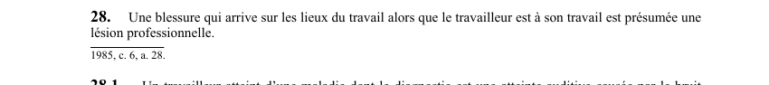

art-28-LATMP : maladie professionnelle, hors liste (caractéristique du travail)
Un article du wiki ⚖️ Recueil législatif
En bref
Une maladie n'appartenant pas à la liste de l'annexe I (maladies professionnelles présumées) est néanmoins une lésion professionnelle si le travailleur établit qu'elle est caractéristique d'un travail qu'il a exercé ou directement liée aux risques particuliers de ce travail.
Visé : travailleur · Nature : preuve de lien causal, fardeau sur le travailleur
🌐 LegisQuébec · 📄 PDF officiel (page 16)
Texte officiel : capture du PDF

Toucher l'image pour l'agrandir🔗 Ouvrir à cette page : LATMP.pdf : page 16 · texte à jour au 20 février 2024
Points clés
- Deux voies de preuve : le travailleur doit établir que la maladie est soit (1) caractéristique du type de travail effectué, soit (2) reliée directement aux risques particuliers de ce travail.
- Fardeau inversé vs art. 29 : contrairement à art. 29 (présomption pour les maladies listées), ici le fardeau de preuve repose sur le travailleur.
- Preuve par présomption possible : la jurisprudence accepte la preuve par présomptions graves, précises et concordantes, pas nécessairement une preuve directe ou un rapport médical exclusif.
- Maladies visées : TMS non listés à l'annexe I, maladies psychologiques d'origine professionnelle, cancers professionnels atypiques, maladies liées au diesel ou à l'exposition combinée.
- Porte d'entrée pour les lésions psychologiques : depuis la LMRSST (2021), les maladies psychologiques (épuisement, TSPT) empruntent souvent art. 28 pour se qualifier.
Application terrain en mine
| Situation | Application art. 28 |
|---|---|
| Aide-foreur avec surdité professionnelle hors présomption | Preuve du niveau de bruit caractéristique du poste |
| Opérateur de scooptram avec TMS lombaires non listés | Preuve des vibrat |
Pages qui pointent ici (2)
- art-25-LATMP : droits sans égard à la responsabilité Recueil législatif
- art-27-LATMP : exclusion : négligence grossière et volontaire Recueil législatif